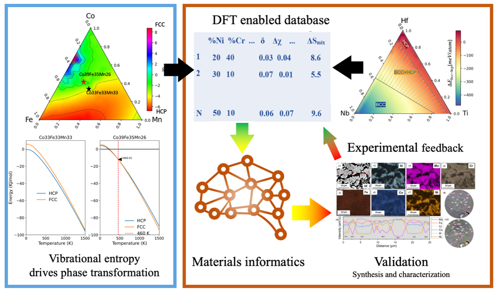

Phase competition, chemical order, and alloy design
We investigate how electronic structure, local bonding, lattice distortions, and vibrational entropy influence phase stability and chemical ordering in compositionally complex alloys. High-throughput calculations and machine learning are used to identify physically meaningful trends and candidate compositions.
